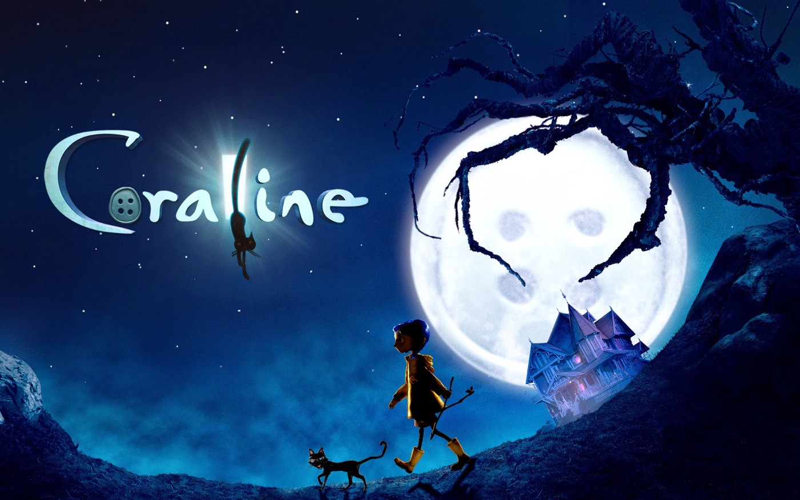
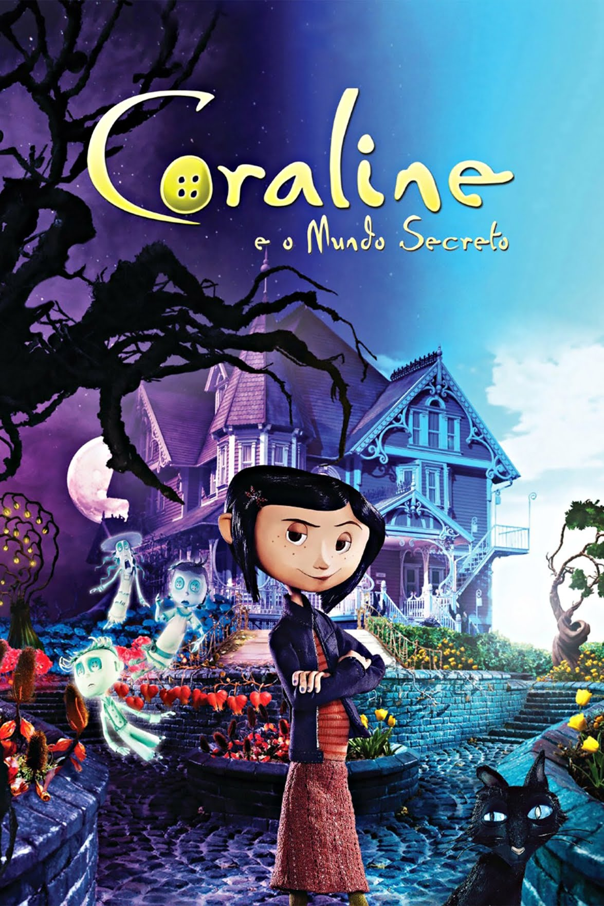

Coraline e o Mundo Secreto é um filme de animação stop-motion estadunidense de 2009, do gênero fantasia, escrito por Henry Selick e baseado no livro de mesmo nome do Neil Gaiman.
Entediada em sua nova casa, Caroline Jones um dia encontra uma porta secreta. Através dela tem acesso a uma outra versão de sua própria vida, a qual aparentemente é bem parecida com a que leva. A diferença é que neste outro lado tudo parece ser melhor, inclusive as pessoas com quem convive. Caroline se empolga com a descoberta, mas logo descobre que há algo de errado quando seus pais alternativos tentam aprisioná-la neste novo mundo.

Coraline chegou a faturar mais de 16 milhões de dólares no fim de semana de estreia[4] e foi indicado ao Oscar de melhor filme de animação.
O filme foi por parte da crítica especializada. Com o Tomatometer de 90% em base de 269 críticas, o Rotten Tomatoes chegou ao consenso: "Com a sua vívida animação stop motion combinada com história imaginativa de Neil Gaiman, Coraline é um filme visualmente deslumbrante e maravilhosamente divertido". Por parte da audiência do site, teve 73% de aprovação.
Assista ao trailer!